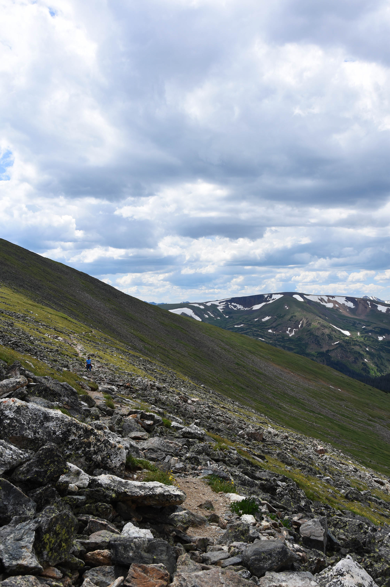
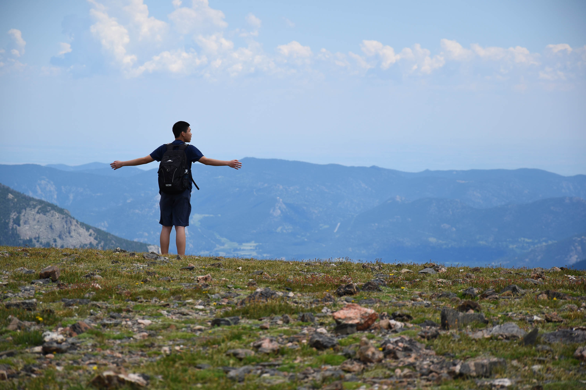
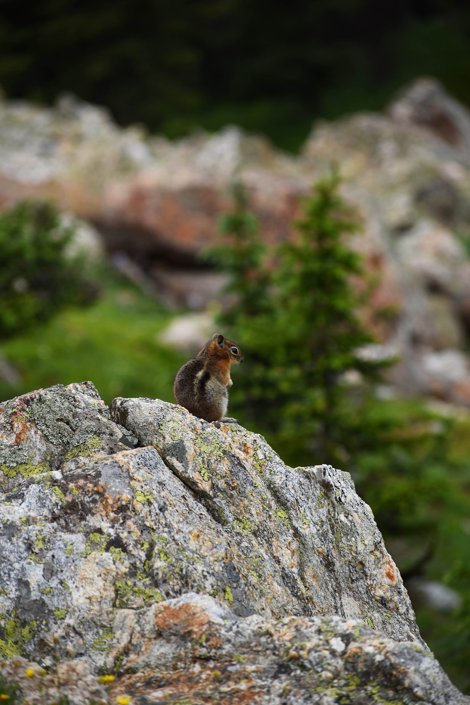
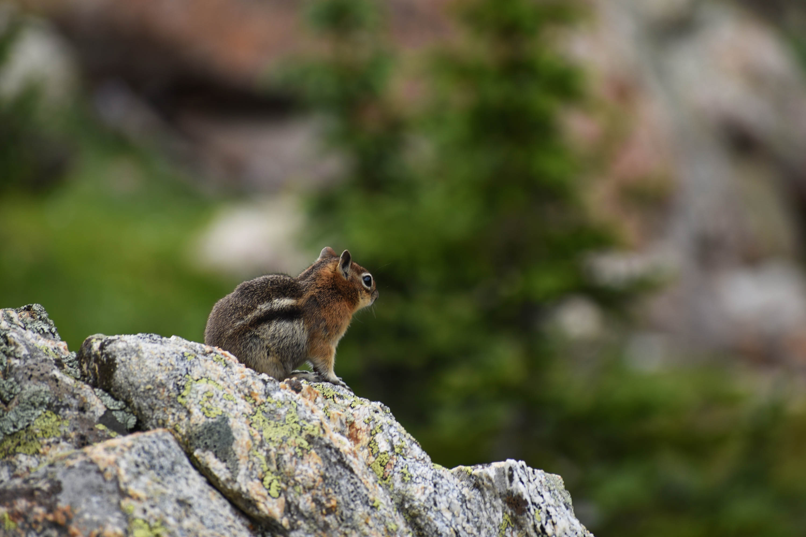
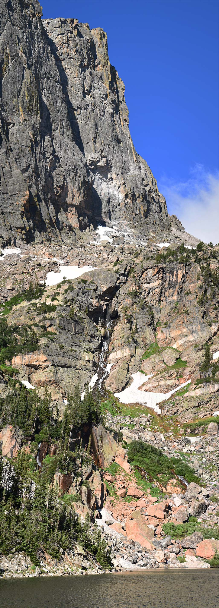
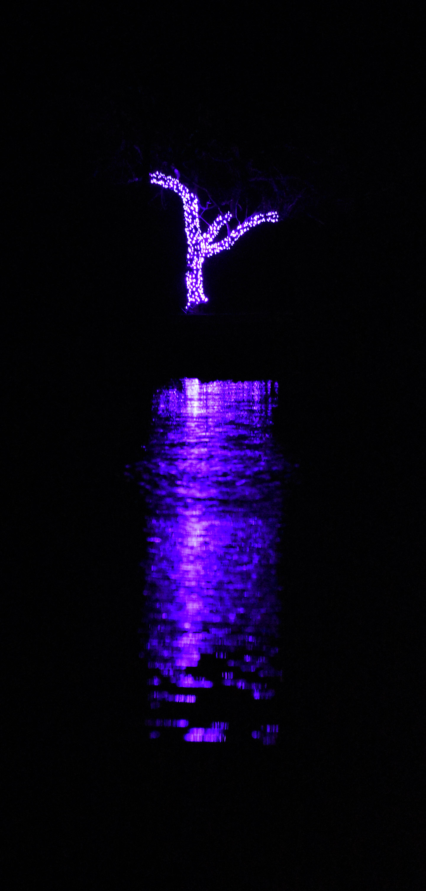

On The Slopes
Mount Chapin, Colorado
4000 x 6000
f/8.0
1/250s
ISO-100
25mm

King of the World
Mount Chapin, Colorado
4000 x 6000
f/6.3
1/640s
ISO-100
105mm

Squirrel in Profile
Mount Chapin, Colorado
4000 x 6000
f/4.8
1/400s
ISO-100
145mm

Squirrel in Profile
Mount Chapin, Colorado
6000 x 4000
f/6.0
1/250s
ISO-100
260mm

Falls
Emerald Lake, Colorado
5133 x 14236
f/5.3
1/250s
ISO-100
75mm

Reflection
College Station, Texas
2880 x 6020
f/5.6
1/100s
ISO-12800
185mm

(Not) Lightning
College Station, Texas
6000 x 4000
f/5.6
1s
ISO-1600
30mm

Glow: Leaves
Muir Woods, California
6000 x 4000
f/6.3
1/100s
ISO-100
105mm

Clearing
Enchanted Rock SNA, Texas
6000 x 4000
f/6.3
1/160s
ISO-100
102mm

Glow: Grass
Arroyo Seco, New Mexico
6000 x 4000
f/5.6
1/200s
ISO-200
112mm

Yellow On Black
Arroyo Seco, New Mexico
6000 x 4000
f/5.6
1/100s
ISO-400
300mm